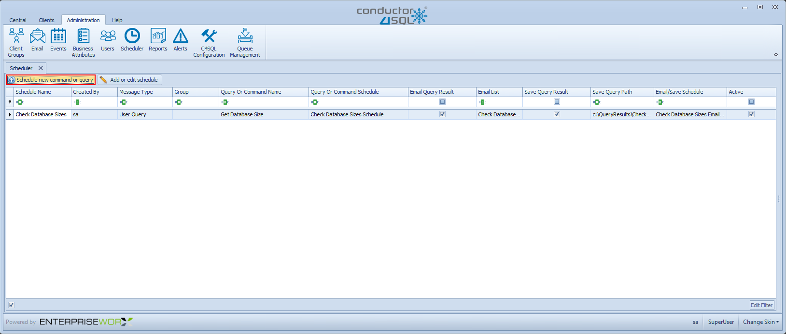
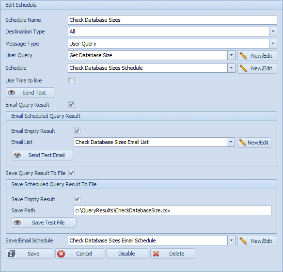

Scheduler Administration Overview
The Scheduler Administration screen is used for scheduling User Commands and User Queries within the Conductor4SQL application.
Scheduling a User Query/Command is useful when you want a script to only run at a given time or when you want to repeatedly send a User Query/Command.

Schedule New Command or Query
When the button Schedule New Command or Query is clicked then you will be presented with the following panel screen, on the right side:

-
Step 1: Schedule Name - The name of the scheduled, it is preferable to use a descriptive name
-
Step 2: Destination Type - The options are All or Group
Note
All - this option will send the scheduled script to ALL clients Group - this option will send the scheduled script to the selected Group of clients.
- Step 3: Message Type - The Options are User Query or User Command
Note
If you choose to schedule a command you cannot email the results.
-
Step 4: User Query or User Command - Select a previously saved User Query or User Command, You can also choose to create a new query or command by clicking on the New/Edit button, refer to the Script Editor Guide
-
Step 5: Schedule - You will need to select the schedule that is already saved or you need to create one by clicking on the button New/Edit, refer to section Add New Schedule and then you will be presented with the screen below.
Add or Edit Schedule
The following screen will let you be able to add or edit existing schedules:
-
Schedule Name - Here you can add the schedule name, preferable use a descriptive name.
-
Schedule type - Here you are able to choose whether the schedule is on a Minutes, Hourly, Weekly or Monthly. You need to fill the necessary fields according to how you would like the schedule to work.
Schedule Types
Minutes - Schedule will execute every x number of minutes between the Start Hour and End Hour parameters Hourly - Schedule will execute every hour at the given Start Minute between the Start Hour and End Hour parameters Weekly - Schedule will execute on the ticked Days at the given Start Hour and Start Minute parameters Monthly - Schedule will execute once a month at the given Day, Hour and Minute parameters
Click the Save button and save the schedule
Tip
You can also click on the Delete button to delete a schedule
Warning
You cannot delete a schedule that is currently in use.